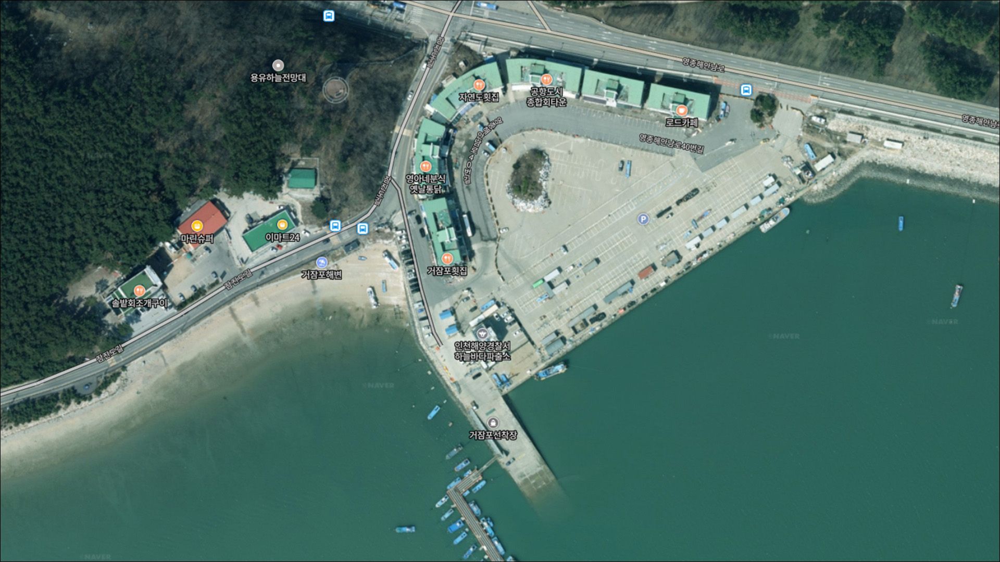
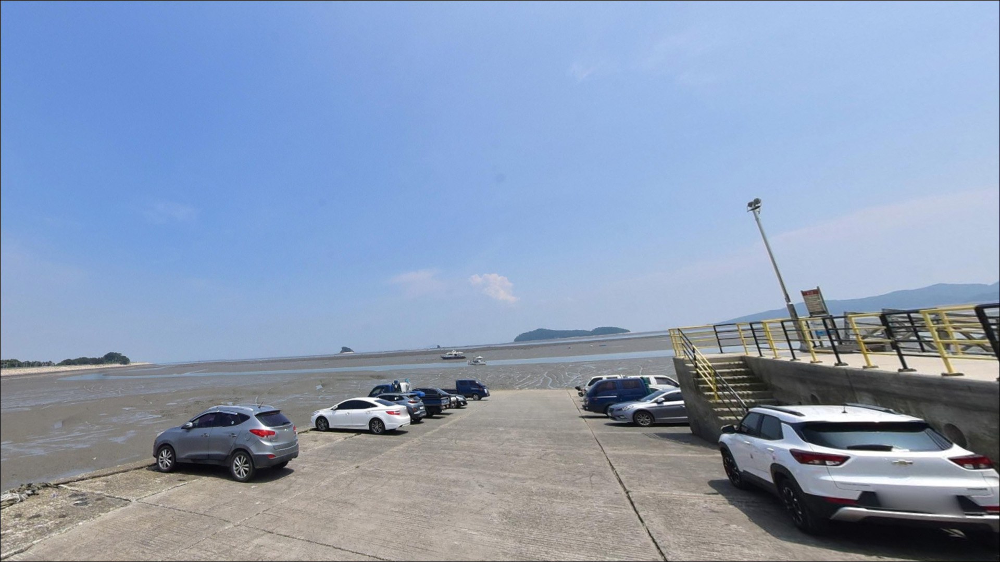
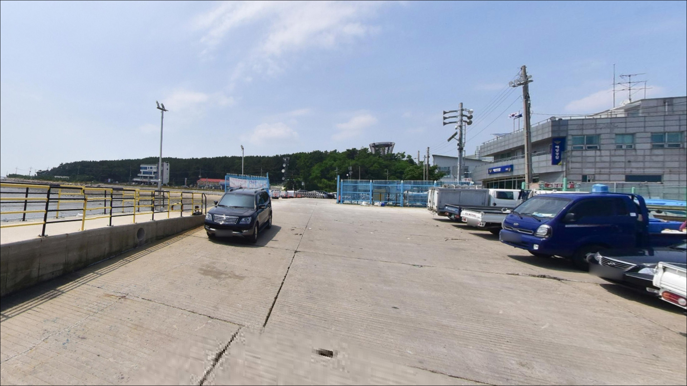
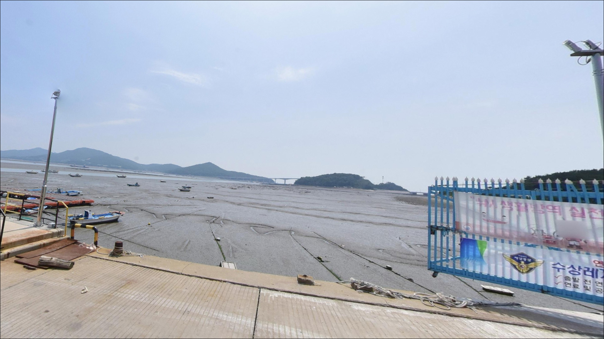
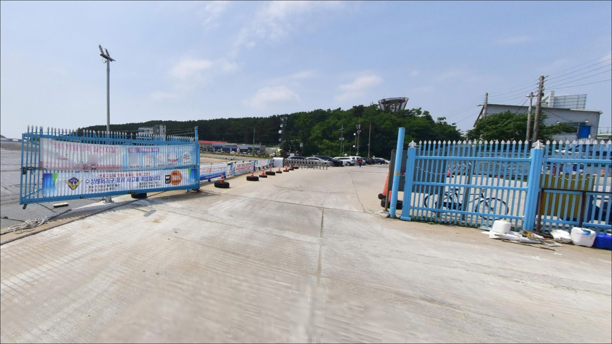
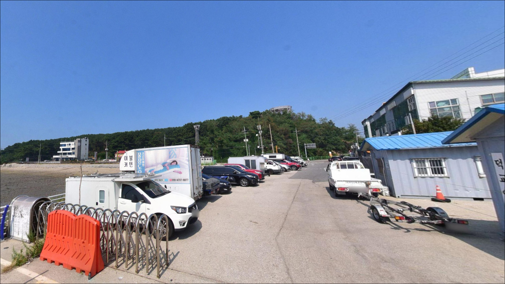
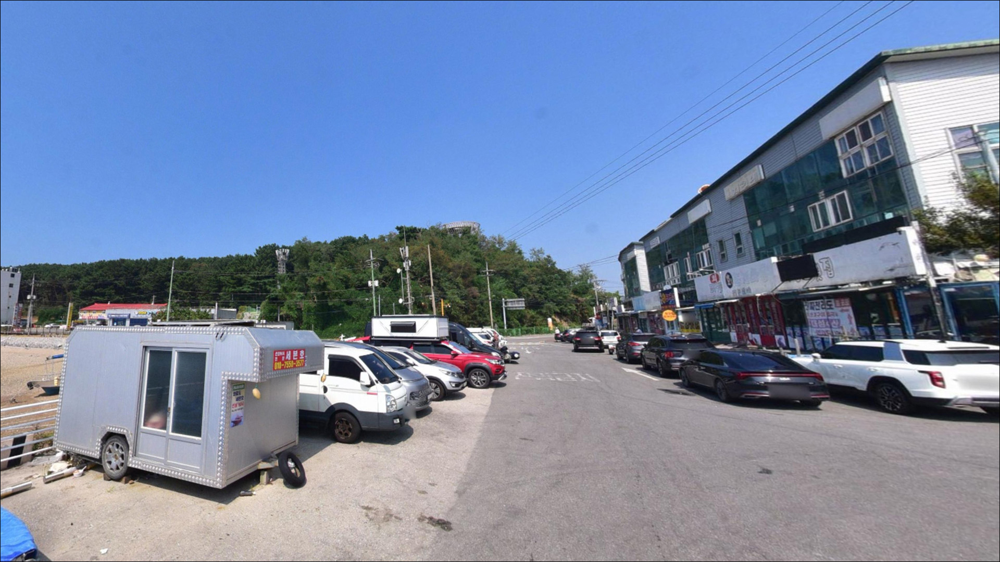
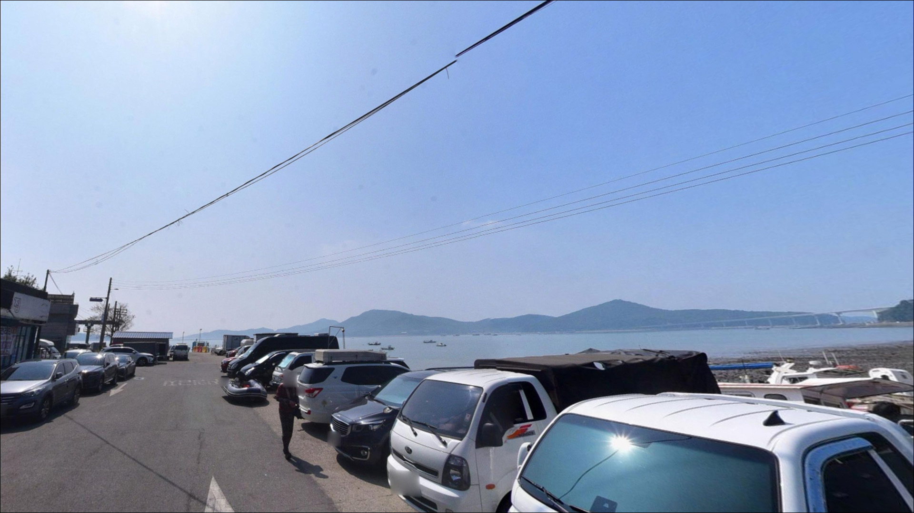
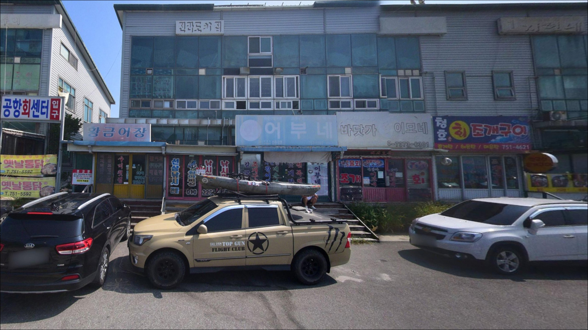

거잠포선착장, 영종도 인천 중구 자연 그대로의 분위기에서 차박, 낚시를 즐기기 좋은 포인트


포인트 안내
거잠포선착장
인천광역시 중구 운서동 2855-2
물때 확인 없이 거잠포선착장에 도착하면,
간조에 드러난 갯벌 앞에서
채비를 던지는 상황이 됩니다.
서해 조수간만 차는 포인트 선택이 아니라
낚시 가능 시간대 자체를 결정하는 변수이고,
들물 타임을 놓치면 어느 자리에서도
반응을 기대하기 어렵습니다.
이 글은 거잠포선착장의
진입 여건, 지형 구조, 물때 기반 낚시 접근법,
차박 가능성을 중심으로 정리합니다.
조황 단정이나 특정 어종 보장은
이 글의 범위에 포함되지 않습니다.

1. 진입 동선과 주차 여건
영종도 본섬에서 영종해안남로를 따라
잠진도길로 진입하면 거잠포선착장에 닿습니다.
도로는 포장되어 있고 경사가 심한 구간은 없어,
일반 승용차 기준으로는
진입 자체에 큰 어려움은 없는 편입니다.
다만 잠진도 안쪽으로 들어갈수록
도로 폭이 좁아지는 구간이 있을 수 있어,
대형 SUV나 캠핑 장비를 실은 차량이라면
출발 전 경로를 한 번 확인해두는 것이 안전합니다.
주차는 간이주차가 가능한 것으로 확인됩니다.
선착장 진입 전 공터와
인근 회센터 방향 주차 공간이
후보로 알려져 있으나,
실제 이용 가능 여부와 규모는
현장에서 직접 확인해야 합니다.
주말과 낚시 시즌에는
관광 방문객과 자리를 공유하게 될 가능성이 있습니다.
회차는 선착장 앞쪽 공터에서
가능할 것으로 보입니다.
선착장은 어선이 드나드는 작업 구역이므로,
도착 즉시 어선 통행 동선을 파악하고
방해가 되지 않는 자리를 선택하는 것이
기본 매너입니다.

2. 차박 환경과 야간 체류 여건
무의대교 개통 이후 거잠포선착장의
도선 기능은 사실상 축소된 상태입니다.
방문자 밀도는 낮아진 편이며,
잠진도 자체의 민가 밀집도도 높지 않아
야간 차량 통행이 많지 않은 환경입니다.
다만 관광지로 등록된 장소라
일출 시간대나 주말에는
방문객이 몰릴 수 있습니다.
야간 조명과 관련해서는
인근 인천공항 관련 구조물에서
배경 조명이 어느 정도 들어올 가능성이 있지만,
선착장 자체의 가로등 설치 여부는
확인되지 않습니다.
개인 헤드랜턴은 반드시 준비하고 가야 합니다.
서해 외항 방향이 열려 있는 구조 특성상
바람과 파도 영향을 받는 날이 있습니다.
낚시 후 잠시 머무는 형태가
이 포인트의 환경에 맞는 이용 방식이며,
겨울철과 기상 악화 시에는
차량과 파도 사이 거리를
여유 있게 두는 편이 안전합니다.


3. 주변 편의시설 및 인프라 현황
거잠포선착장이 위치한 잠진도 주변은
개발 밀도가 낮은 지역입니다.
선착장 인근에서 편의점이나 식당을
기대하기 어려운 환경이므로,
출발 전 영종도 본섬 운서동·용유동 방향에서
식수, 얼음, 미끼, 간식을 미리 챙겨두는 것이
현실적인 준비입니다.
반경 3km권으로 넓히면
영종해안남로 일대에
편의점이 운영 중인 것으로 파악됩니다.
방문 전 지도 앱으로 정확한 위치를
확인해두는 편이 좋습니다.
응급 상황 발생 시에는
인천국제공항 내 의료센터와
영종도 시내 약국·병원이
반경 10km 이내에 있습니다.
거리 자체는 멀지 않으나,
기본 비상약품은 차량에 상시 비치해 두는 것이 안전합니다.

4. 방문 전 챙겨야 할 준비사항
가장 먼저 확인해야 할 것은 물때입니다.
거잠포선착장 일대는 서해 특성상
조수간만 차가 큰 지역으로,
간조 전후에는 낚시 가능 수심이 크게 줄어듭니다.
바다타임에서 인천 기준 물때를 확인하고,
들물 타임 전후로 입장 시각을 맞추는 것이
기본 전략입니다.
서해는 바람 방향 변화가 빠른 편입니다.
출발 당일 아침 기상청 예보를 다시 확인하고,
강한 바람이 예보된 날에는
방문 계획을 재조정하는 편이 낫습니다.
선착장 슬립웨이(경사형 보트 진수대)는
해수에 젖으면
미끄럼 위험이 높아 접근 시 주의가 필요합니다.
야간 낚시를 계획한다면
구명조끼와 헤드랜턴은 필수입니다.
선착장 발판 상태와 어선 입출항 시간대를
현장에서 미리 파악해두면
자리 선정이 수월해집니다.

5. 갯벌이 드러나기 전에 자리를 잡아야 하는 이유
거잠포선착장은 소형 선착장 구조에
슬립웨이가 함께 있는 형태입니다.
선착장 전면은 무의도 방향 해수면이 열려 있어
조류 흐름을 직접 받는 구조입니다.
서해 조수간만 차가 큰 지역 특성상
간조 시에는 선착장 앞 갯벌이 드러날 가능성이 있어,
낚시 가능 시간대가 들물 전후로 한정됩니다.
선착장 끝단과 측면 석축 주변은
수심이 비교적 빠르게 깊어지는 구간으로 보입니다.
조류가 모이는 선착장 끝단과
잠진도 연육교 방향 해안선이
이 포인트에서 주된 탐색 구간입니다.
정박 어선 사이 틈새보다는
선착장 외곽 석축 라인이
낚시 접근에 유리한 편입니다.
바닥은 갯벌과 잔돌이 혼재된 구간으로 추정됩니다.
서해 선착장 패턴상 망둥어·붕장어 등
바닥층 어종이 들물 시간에
활성을 보이는 경향이 있습니다.
최신 조황은 방문 전 반드시 검색해 보시기 바랍니다.


6. 포인트에 어울리는 낚시 스타일
들물 타임이 시작되면
원투낚시가 가장 기본적인 방식입니다.
갯지렁이 미끼로 바닥층을 공략하면
망둥어와 붕장어를 기대해 볼 수 있는 여건입니다.
늦여름에서 초가을(8~10월)이
망둥어 반응이 활발해지는 시기로 알려져 있습니다.
정조 전후에는 채비를 더 멀리 보내는 방식이 유효합니다.
루어낚시(지그헤드·웜)는
선착장 끝단과 석축 주변 탐색에 잘 맞습니다.
우럭·노래미가 바닥 암초 구조에 붙어 있는 경향이 있어,
발밑부터 천천히 폴링시키며
석축 경계선을 따라 탐색하는 방식이
이 포인트 지형에 어울립니다.
밑걸림이 잦을 수 있으니
여분 채비는 넉넉히 준비하는 편이 좋습니다.
찌낚시는 내항 쪽 잔잔한 구간이나
선착장 측면에서 시도해 볼 수 있습니다.
숭어가 들물을 따라 들어오는 시기에
반응이 올라올 가능성이 있습니다.
가을철에는 주꾸미·갑오징어 에깅을
선착장 외곽 방향으로 시도하는 경우도 있습니다.

7. 대안 포인트와 플랜 B 동선
거잠포선착장 여건이 맞지 않을 때
가장 가까운 대안은
잠진도 선착장입니다.
같은 해안선 위에 있어 이동 거리가 짧고
낚시 여건이 비슷한 편입니다.
거잠포 주차 공간이 여의치 않을 때
첫 번째 이동지로 활용하기 좋습니다.
무의도로 이동하면 선택지가 늘어납니다.
무의도 광명항 방파제는
광어·농어·붕장어·우럭 등이 대상어로 거론되는 곳으로,
방파제 구조가 안정적이고
진입과 주차 여건도 상대적으로 명확한 편입니다.
거잠포선착장을 처음 방문한다면
무의도 광명항을 기점으로 잡고
거잠포를 병행 탐색하는 동선이
시간 낭비를 줄이는 방식입니다.
차박 대체 후보로는
영종해안남로를 따라 조성된
해변·관광지 주변 주차장들을 참고해볼 수 있습니다.
야간 주차 허용 여부는 지점마다 다를 수 있으니,
출발 전 개별 확인이 필요합니다.

들물 타임을 알면
거잠포선착장이 달리 보입니다
망둥어·우럭·붕장어 등
서해 연안 어종을 기대하는 낚시인이라면
거잠포선착장은 영종도 권역에서
접근성이 좋은 생활낚시 포인트입니다.
화려한 조과를 기대하기보다는
물때에 맞게 들어와 짧고 밀도 있게 운용하는
스타일에 잘 맞는 곳입니다.
반면 물때 계산 없이 방문하거나,
자급 준비 없이 잠진도 안쪽까지 들어온다면
준비 부족으로 불편한 출조가 될 수 있습니다.
물때 확인, 자급 준비, 기상 체크,
이 세 가지를 갖추고 가는 것이
이 포인트를 제대로 쓰는 방법입니다.
낚시를 마치고 서해 일출을 기다리며
차 안에서 새벽을 맞는 차박 여행자라면,
기상 조건이 안정된 날 거잠포의 이른 아침이
기억에 남는 여운을 만들어 줄 수 있는 곳입니다.